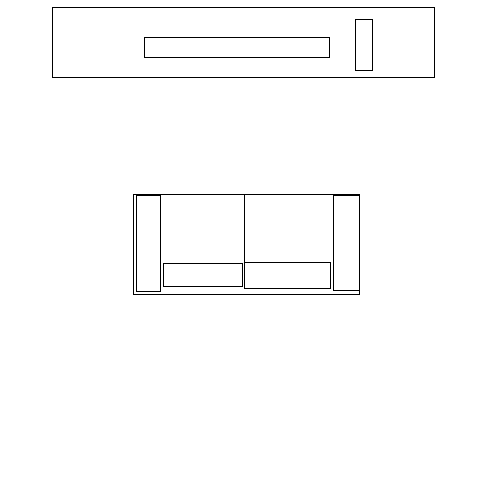
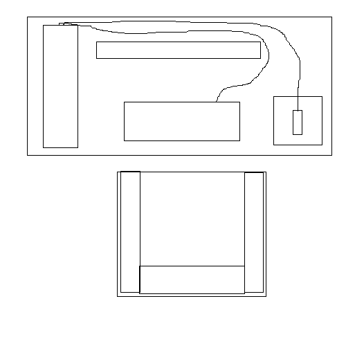

Splitscreen sucks, seperate screens or no bacon
Three reasons I can think of:
-
Its not a huge advantage for most PC games. The way PC gaming has evolved and the way console gaming has evolved means that they fill two entirely different niches. The former has a particular set of gametypes centered around the idea of a single person sitting down at a single monitor with a single set of interface modules; adding an extra screen doesn’t in any way enhance most games. On the contrary, a second screen on an RTS would just detract from gameplay, because both of your friends have to deal with half the screen, making the game almost impossible to play. That means that, for most PC games, split screen would just be stupid.
-
Its not a huge advantage even for games that it could work for. Even when you consider games that can be played in split screen, its really not the way the PC has been set up to operate. Sure, you could do it, in the same way that you could plug a keyboard and a mouse into your 360 and play Halo like, you know, a normal FPS should be played. But the point is that the two serve different functions and shouldn’t be unnaturally grafted onto each other.
The PC has evolved as a single person (perhaps even masturbatory) gaming machine, whereas a console is a more social one, allowing multiple people to play on the same TV. Further, PCs are capable of doing numerous other tasks with their human interface devices, whereas consoles are only able to do one thing; play games. That means that, as devices, they have evolved to suit different purposes; people who buy consoles do it because they want to play games when their friends are sharing the same screen, and people who buy PCs want to play games when their friends aren’t sharing the pixels. That means that PC users will never take advantage of such a feature, just because if they wanted to do it, they already would have.
If multiplayer in-home gaming is your priority, then you invest in a console; if it isn’t, then you go for a PC. Sure, some people who buy PCs do it because they can’t afford both, but the group isn’t huge, and the amount of people who would take advantage of it for any kind of appreciable amount of time would make the time and effort it would take to implement it across a wide variety of games a poor investment choice.
- Its not really possible. PCs are set up to have a single set of interface equipment; you never see a PC with two keyboards and mouses, just because its functionally useless for every single other task a computer uses. That makes the investment overtly onerous for a tiny return on your investment; you get the ability to play a few select games when one of your friends come round, yes, but how will that second keyboard help you browse the internet?
Further, as has already been mentioned, most monitors are tiny. Computers as small as laptops are designed to play games; how will a 13 inch laptop fare with two people trying to control two armies in Total War? The answer: Not well.
Firstly, he wasn’t bashing a console. Secondly, he’s completely correct. Thirdly, this entire thread is about opinions. Fourthly, when you tell someone his personal opinions are rubbish, how can there be no offence to him?
Holy shit what a load of utter rubbish.
The biggest argument for pc splitscreen is it would probably take little work on the part of developers. L4D1 already had splitscreen code made by valve in it, and all it takes to make it work is a small modification (see link in OP). Just imagine if Portal 2 shipped with splitscreen on pc. Sure, it might be more difficult to play, but co-op would be so much more fun if the person were standing right next to you (yes I know you could LAN but that is an incredible hassle). And especially for Valve; seeing as all their games use the source engine, they probably would only have to code splitscreen once and it would work for all their games and all mods (with a few modifications for each of course).
Also, it doesn’t take a sofa to splitscreen game. All it would take is two people two chairs and a decent sized monitor; 24 inches would be more than enough. I’ve splitscreen gamed on consoles with about a 13 inch tv. And possibly it could even be set up so that people with two monitors could have one player on each monitor, or two players on each monitor.
In summary; pc splitscreen wouldn’t appeal to a whole lot of people, but it would take a very small amount of work to implement and would be incredibly nice for the people it appealed to. Whenever I talk to a console user they always tell me abotu how important splitscreen is, so clearly it matters to gamers. And if pc were given splitscreen gamers who were trying to decide between pc or xbox would go pc.
That gotta be so fucking ironic, kid.
If you aren’t going to say anything useful then just fuck off and go back to picking on toddlers.
There are a number of different reasons.
-
Majority of PC gamers don’t care about splitscreen gaming, so devs don’t include it
-
PCs have always normally been a single user experience, so by extension so has the gaming. Consoles on the other hand have almost always been splitscreen experiences because when console gaming began there weren’t networks for console gaming so the only way to experience multiplayer was to have multiple people on the one system.
-
The environments for console make it a lot easier to do splitscreen as most of them are set up in large open rooms in front of a couch

Compared to most PC setups that are very close and designed for single user use with a computer chair

With the console gaming there is a lot more room for people to sit and play whereas with PC gaming there is usually less room.
- It’s a lot easier to grab 2-4 controllers and pass them around, especially these days with wireless, than to set up 2-4 keyboard and mice.
- true, but I don’t think it’d be hard to implement so even if only a few people enjoyed it it’d take little work, and it might convince console fags to switch to pc And if LAN parties are pretty popular then clearly pc players like social gaming, so why not make social gaming way easier; two player per computer instead of one
- I don’t see this as a reason things can’t change
- true, but in diagram 2 you could very easily and comfortably set down another chair and play some 2 person co-op
- as I’ve said before all secondary players would use controllers like in the L4D1 modification
-
For the whole LAN Party thing, most online games are designed for more than the standard 2-4 people in a splitscreen situation. LAN parties usually have more then 2-4 people, and small LAN parties will often have the players forming a team for a larger online experience.
-
You can barely get developers to change the look of the main character between games (standard brown hair, brown eyes), and you expect them to start shifting focus of the gameplay to allowing splitscreening?
-
Ah, but the diagram fails to take into account where the set-up is. I know my set-up is NOT in an area where a second chair would be easily thrown in.
-
Having 1 player sit near the screen with mouse and keyboard while others sat back and to the side with controllers would just feel… odd and out of place.
- Yes but with the millions of dollars it costs to make a game these days, most producers won’t want spend money on a feature that 1% of their users will use.
2)Maybe, but making it “easier” doesn’t make it better. If I was going to a LAN party I’d rather have my own PC to myself and not lose half my screen real estate. Some people would do it, but they would be in the minority. It’s not like over night LAN parties would use half the number of PCs if split screen was included in every game.
3 & 4) This would work for racing/fighting games, but for anything like an FPS or any type of shooter really, most people on PC prefer keyboard and mouse. The second player would have a gimped experience unless you had a large enough desk to fit two keyboard and two mice and the game was able to detect the two.
PC gamers are used to the best of the best and being able to mod and customise their games, so if devs suddenly turned around and announced split screen PC gaming with controllers I think most people would say “wtf” and “meh.”
Ooh oh how about no. I will haunt you forever, kiddo
If it was so epic, it would have been done after the first 24" monitor landed on the streets.
Everyone in the right mind knows that no one needs this shit. Leave alone the fact that a majority of PCs is NOT bought for gaming, while EVERY console IS. Why do developers need to be catering for a such a tiny minority who buys huge monitors specifically for gaming? No one cares if some PC fanboy who can’t afford a console is so butthurt that he cannot play splitscreen on his ULTRA EPIC GAMING RIG.
If you want splitscreen so badly, why don’t you ask your mom to buy you a PS3 or Xbox360 or whatever for christmas? The new 320gb bundle with Move controller costs only 300 quid. Why do you bother people with creating a thread about another pointless shit no one wants?
EDIT:
Thank you for your observations, but who exactly are you, oh Big Brother?
Good God. Will you pretentious fucks ever stop clogging these boards?
It’d have to buy it myself, and it’d be a complete waste of money.
ITT: oh gawd someone suggested an entirely optional feature be included into games when the feature is so easy to include Valve already did it unintentionally with L4D1.
Fine then, Q_Q some more about no split-screen on your glorious rig.
it does not help when someone repeatedly posts one bullshit idea after another. Just stop attention whoring and you will be fine :retard:
I’m always impressed with the way you handle criticism of your ideas. You asked a question as to why developers don’t do it currently, I and others have given you the answer.
Right, and so when every hour spent making a game costs money, why would they spend it when the entire community has adapted to playing games in a particular way. Motion controls are an evolution from standard controllers; that’s why they’re able to catch on. Split screen is a total U-turn in standard computer gaming, which is why it feels absurd and unnatural.
So, basically, it would be harder than normal, but LAN is more of a hassle? So configuring a second controller is easy then? I read the instructions and it sure as hell doesn’t seem that easy. Would buying and setting up a second set of keyboards/mouses be better?
I’d say the hassle of pulling out an ethernet cord or telling someone your wireless password is nothing compared to the hassle of trying to set up split screen. Moreover, the enjoyability of a game only decreases with split screen; even on a laptop, games are going to be more fun, because you’re playing them the way they’re supposed to be played.
Firstly, I never said you needed a sofa, and even if you had one, that wouldn’t fix the problem. Secondly, having a monitor each would solve the issue of, you know, an inability to see, but wouldn’t fix any of the other issues, namely that you’d need a second set of peripherals that would serve no other useful function but for the few games you could play with them. Thirdly, do you know if that’s even possible? Fourthly, if you’ve really splitscreened games on a 13 inch TV, you’d know how unbelievably painful it is, especially when, on a console, you don’t sit with your face pressed up next to it.
Oh garth, your thinly veiled insults are always so entertaining. Aside from the fact that Starcraft is one of the most popular games in the world, I simply said that it wouldn’t work for a lot of games, and that was why it wasn’t implemented in those games. Sometimes you need to learn to read your own questions, and you’ll understand your answers a lot more.
…Right. Aside from the fact that it doesn’t work, the reason you shouldn’t do it is because console gaming has evolved to use the controller. Everything from racing to fighting has been grafted onto a controller interface, and transposing that to a keyboard and mouse doesn’t go naturally at all in most cases. That’s why Prince of Persia feels clunky on a PC, and FPS gaming feels silly on a console. And that’s exactly the same reason you shouldn’t have split screen gaming on a PC. For a gaming platform that has evolved in a particular way with a particular set of players, making this investment to please an extremely tiny minority will provide no return on investment, thus meaning that nobody does it.
If you’re so obsessed with the idea, learn to code and do it in every game you want to play, but we’ve told you why game developers don’t do it. In summary:
-
It doesn’t work for a whole bunch of game types.
-
It isn’t congruent with how computer gaming works, meaning that it just wont work well for 99% of computer set-ups.
-
Computer gamers won’t use it.
-
Its what consoles are for.
Loony, don’t bother with this guy and his attention whoring. It’s not the first time he tries to pull this kind of shit off.
I’m well aware. I remember back to those truly amazing Zune discussions.
And his mom’s mac.
Oh look, he ran away.
OP is wrong, for reasons already stated here many times.
Garth, you’re alone in a crusade no one believes in.
I understand your points, but the thing is, if it was something a lot of PC gamers wanted for a long time, then it would’ve been supported already at some point by the mainstream industry.
The L4D splitscreen feature on PC is just a leftover code from the 360 that Valve overlooked. If it was intentional or not, I don’t know, but still, it’s not officially supported by them and only a fan made mod makes it work properly.
There simply is not enough demand for splitscreen on PC gaming for the several reasons that were already mentioned here and you’re not certainly going to change anything. Specially if you keep referring to console gamers as fags.
I’d just like to throw this out there, OP has mentioned several times that the secondary players or even all the players would use a controller to facilitate splitscreen on the PC. In my opinion, if you were going to use controllers anyway, you may as well just sit down in front of a TV with some friends and use a console. You’d end up with the same experience, and honestly, I’d rather be doing it with a 52" TV as a opposed to a computer monitor.
If the next argument is to perhaps move your computer to the living room and hook it up to the TV to play multiplayer games, I’d say that’s essentially what a CONSOLE DOES.
Am I the only one who uses the same screen for his PC, Console and as a TV then?
Also, both me, my brother and my Dad have PC’s hooked up to our TVs in the living room. It’s not common, but it’s not as unusual as you would think. I would rather sit down and play Left 4 Dead 2 splitscreen on my PC with my friends than on console any day. In fact we switched over after trying the console version, it had awful graphics and unplayable framerates when you were in splitscreen.